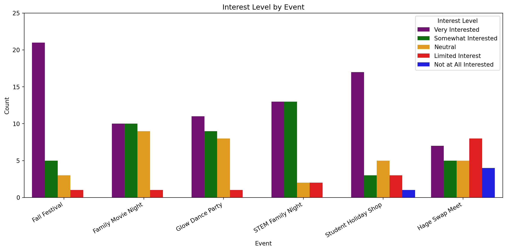
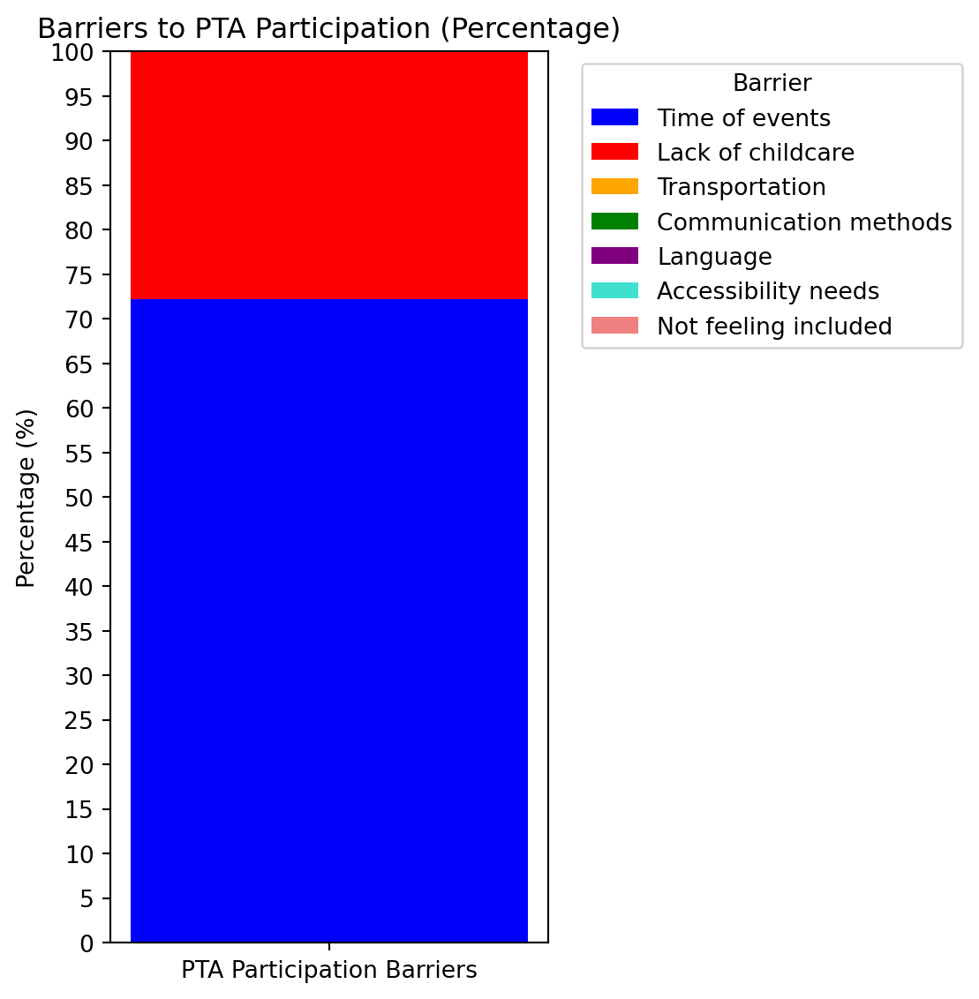
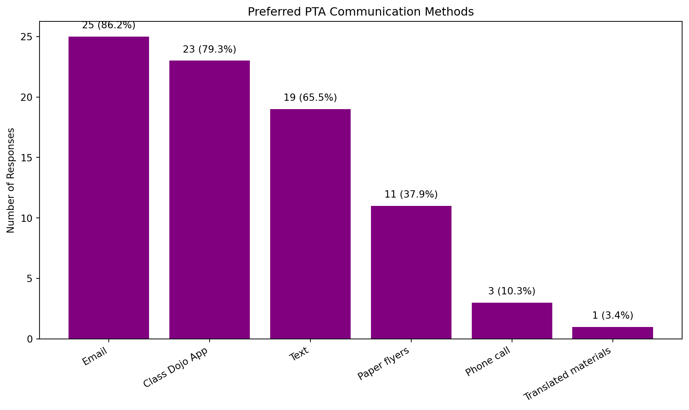
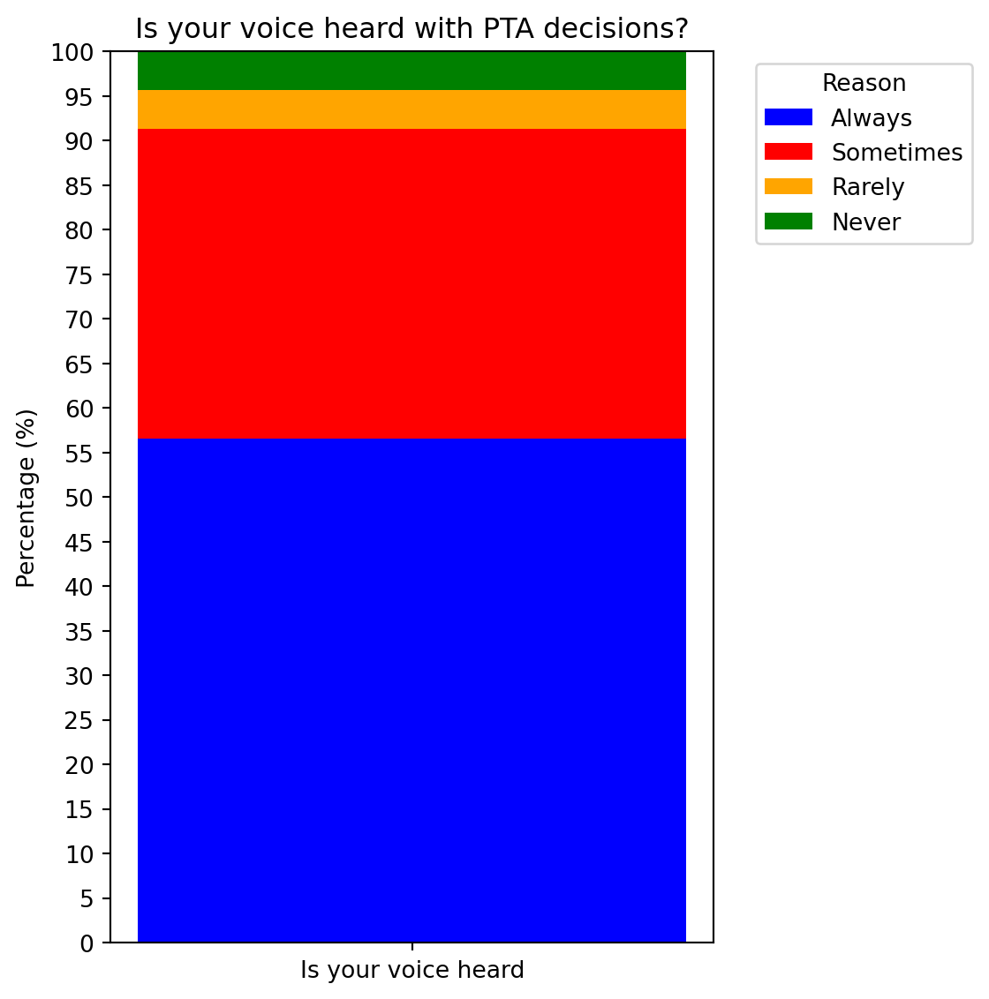

Hage PTA Family Survey Spring 2025 Results
Survey link
Question 1
The below events are a fun and engaging way to build community and connect families. Please rate each event below based on how interested your family would be in attending.
Question 1 summary
Fall Festival, STEM night, and Holiday Show all exhibited a strong level of interest. Glow dance party and Movie nights were also well recieved. Swap meet didn’t exhibit the same level of enthusiasm as the other events. Parents would like to see events to be earlier in the evening or during the day.
Question 2
Do you have any suggestions for additional activities, programs, workshops you would like to see the PTA put on in 2025-26?
Comments left by survey responders
Homework support & inclusive holiday support would be cool
I love the family nights that have engaging activities. The STEM night was my favorite. I would love an Art night, a sensory-friendly night, an inclusive holiday event night, exercise night (maybe a class like yoga or Zumba - maybe there’s a parent who could teach a class for free?), a baking or cooking class night. I think a toy or book swap would be really fun. Bike to school day would be great! https://www.walkbiketoschool.org/. I think a family picnic day would be fun. I like the idea of the movie night but I think it’s too often geared towards the older kids. I like the 1.5 hr events that start at 5:30 on a Friday evening. And having concessions available is very nice. I wonder if we could also have a donation bin (for money) or QR code donation option available too to help sponsor these events
Cultural night - all kids can learn from different cultures and food !
We love the family get togethers on a Friday night. We like seeing all the kids and playing together
Field trip for 5th and 4th grades
Sensory friendly game nights
a winter festival and more events!
Learning independence
Sensory-friendly family nights
Resource fair, family picnic day, inclusive holiday events
Level Up after school clubs, Parents’ Night Out, Karaoke night fundraiser, car wash, pancake breakfast, silent auction, pie-in-the-face fundraiser, PTA cookoff, Father Daughter / Mother Son dance, Bingo Night, Trunk-or-Treat Party, Ice Cream Social, art night, …
Career day, beach/park clean up, karaoke night, car wash, parents night off,
Question 3
What barriers, if any, have made it difficult for your family to participate in school or PTA events?

Question 3 Summary
The results suggest that time of events is a big barrier for PTA participation.
Question 4
Are there any types of events or resources you would like to see that specifically support families of students with IEPs or 504 plans?
Comments left by survey responders
Organized free play (limited supervision)
Sensory friendly activities, supplies, resources
Question 5
What is the best way for the PTA to communicate with you? (Check all that apply)
Total: 29
Question 5 summary
Based on the results, there seems to be a strong peference for electronic means of communication of PTA events. Translation of content in different languages has not been something I’ve seen done in the past, but something we should consider, espeically given the diverse student body at the school.
Question 6
Do you feel your voice is heard when it comes to decisions made by the PTA?

Question 6 summary
Majority of responses are either always or sometimes.
Conclusions
There is definitely enthusiasm for Fall Festival, STEM nights, and Holiday gift shop. There are some good ideas for new events left by responders that we should consider. Timing of PTA events seems like a big barrier to participation and we can try and think creativly about how accommdate different schedules. Having more sensory friendly events can help engage SpED famlies in PTA events. Finally, based on the data, there is more enthusiasm for electronic means of communication (Class Dojo, email, text) for PTA events.
There were 30 survey responses, with two-thirds from Kinder and UTK families. While this may skew results toward lower grade perspectives, addressing their suggestions could foster stronger long-term engagement with the PTA.
Comments left by survey reponsders for question 1: